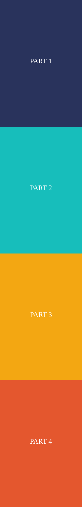

A Long Graphic In Two Parts
The city published its breakdown of the new metro line as one long graphic, delivered in two parts so that each file stays small enough to load quickly on a phone. Both parts are below, followed by a photo of the airport platform.
The first part covers the airport link and the river crossing. The second covers the northern districts and the night service, which starts a month after the opening.



The council will publish ridership numbers every quarter for the first two years. The first report is due in the summer, and it will decide whether the ferry timetable survives into the following year.
Construction ran two years late and about a fifth over budget. Most of the delay came from the tunnel under the river, where the ground turned out to be softer than the survey said.